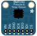

In this workshop, you will connect a BMP280 sensor to an Arduino via the SPI interface. You will program the Arduino to read the sensors temperature, barometric pressure and altidude values and send the data to the serial interface.
The BMP280 sensor is an environmental sensor that senses temperature, barometric pressure and altitude. This sensor is great for all sorts of weather sensing. The sensor is very precise with a barometric pressure accuracy of ±1 hPa, a temperature accuracy of ±1.0°C and a altimeter accuracy of ±1 meter.
For this lab, you will connect the BMP280 to the Arduino. The sensor will interface with the Arduino via the SPI itnerface. Once connected, the Arduino will read temperature, barometric pressure and altitude data from the BMP280 and write the data to the serial interface.
To begin, grab the parts listed in the Parts section and assemble them as illustrated in the diagram in the Breadboard section.
Once your circuit is assembled, use the Arduino IDE to type in the code in the Program section and upload it to your Arduino. To do this, plug the Arduino board into your USB port. Then select the proper port in Tools > Serial Port > (the comm port of your Arduino).
Next upload the program by going to File > Upload to I/O Board (ctrl+U). Finally bask in the glory and possibility that controlling lights offers.
The following the parts for this lab.
BMP280 Pressure & Temp Sensor |
The BMP280 measures temperature, barometric pressure and altitude. |
/***************************************************************************
This is a library for the BMP280 humidity, temperature & pressure sensor
Designed specifically to work with the Adafruit BMEP280 Breakout
----> http://www.adafruit.com/products/2651
These sensors use I2C or SPI to communicate, 2 or 4 pins are required
to interface.
Adafruit invests time and resources providing this open source code,
please support Adafruit andopen-source hardware by purchasing products
from Adafruit!
Written by Limor Fried & Kevin Townsend for Adafruit Industries.
BSD license, all text above must be included in any redistribution
***************************************************************************/
#include
#include
#include
#include
#define BMP_SCK 13
#define BMP_MISO 12
#define BMP_MOSI 11
#define BMP_CS 10
//Adafruit_BMP280 bme; // I2C
//Adafruit_BMP280 bme(BMP_CS); // hardware SPI
Adafruit_BMP280 bme(BMP_CS, BMP_MOSI, BMP_MISO, BMP_SCK);
void setup() {
Serial.begin(9600);
Serial.println(F("BMP280 test"));
if (!bme.begin()) {
Serial.println("Could not find a valid BMP280 sensor, check wiring!");
while (1);
}
}
void loop() {
Serial.print("Temperature = ");
Serial.print(bme.readTemperature());
Serial.println(" *C");
Serial.print("Pressure = ");
Serial.print(bme.readPressure());
Serial.println(" Pa");
Serial.print("Approx altitude = ");
Serial.print(bme.readAltitude(101300.25)); // this should be adjusted to your local forcase
Serial.println(" m");
Serial.println();
delay(2000);
}
Check the make sure the proper serial port is selected. You select the serial port using the menu items tools > serial port.
The BMP280 sensor will not work if the SPI pins are not properly connected. Make sure the pins are connected to the Arduino as follows:
Add LEDs to your circuit, one for each touch pad. Program the Arduino to light an LED when the temperature rises above a threshold.
Add a speaker to your circuit and program it to play a note when the temperature rises above a threshold.